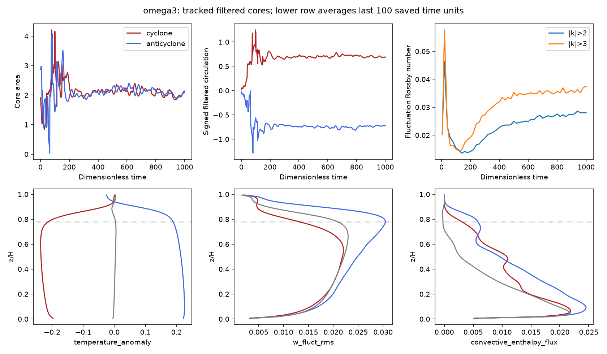
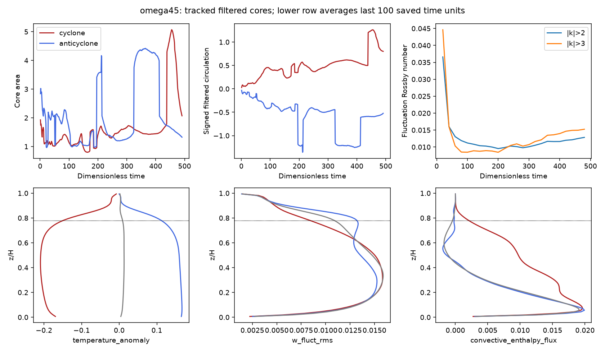

Unity saved-field analysis · fixed-rotation compressible convection
← Gallery landing page · Rotation comparison and energy-budget limitations · Methods and provenance · Mean-transport separation and initial-state check
Both runs retain warm anticyclonic regions and cool cyclonic regions. However, that temperature/sign association already exists in the balanced initial eddies. It is not independent proof that convection creates or maintains the anticyclone.
At Ω=3, small-scale upward heat transport is stronger in the anticyclonic core over t=400–480, and remains stronger near t=1000. At Ω=4.5, the matched bulk-average small-scale fluxes are much closer, and the within-region covariance does not favor the anticyclone. Thus the simple claim that faster rotation always strengthens a convective advantage inside the anticyclone is not established. Height-dependent differences, especially near the cap, are visible in the profiles.
Coexistence itself agrees with Chan & Mayr (2013) and Käpylä et al. (2011); the surviving cyclone does not disqualify an anticyclonic LSV. These measurements test associations suggested by those papers, not a closed maintenance mechanism.
Existing verified movie: vorticity above passive tracer; three columns at z/H=0.19375, 0.49375 and 0.89375. Fixed scales; nondimensional time. Ω=4.5's new continuation is not yet included.

Top: threshold-defined connected-core area and circulation, and fluctuation Rossby number for two spatial cutoffs. Abrupt jumps can reflect a threshold bridge, split or change in component membership; these are not material circulation histories. Bottom: conditional height profiles averaged over t=900–1000. Blue anticyclone; red cyclone; gray surrounding fluid. Dotted line: convection/cap interface z/H=0.78. The plotted heat flux uses whole-plane Favre-mean subtraction; use the table below to separate regional mean transport.
| Region | Temperature anomaly | Filtered vertical speed RMS | Within-region covariance heat flux | Small-scale heat flux |
|---|---|---|---|---|
| cyclone | -0.2110 | 0.01646 | 0.00674 | 0.00619 |
| anticyclone | 0.2089 | 0.01876 | 0.01085 | 0.00919 |
| background | 0.0012 | 0.01749 | 0.00725 | 0.00725 |
Equal-weight averages over saved times and heights; per-area regional flux, not total regional heat transport. All values nondimensional. Small-scale flux retains horizontal |k|>2 in both w and T; within-region covariance removes density-weighted regional means separately at each height.
Existing verified movie: vorticity above passive tracer; three columns at z/H=0.19375, 0.49375 and 0.89375. Fixed scales; nondimensional time. Ω=4.5's new continuation is not yet included.

Top: threshold-defined connected-core area and circulation, and fluctuation Rossby number for two spatial cutoffs. Abrupt jumps can reflect a threshold bridge, split or change in component membership; these are not material circulation histories. Bottom: conditional height profiles averaged over t=380–480. Blue anticyclone; red cyclone; gray surrounding fluid. Dotted line: convection/cap interface z/H=0.78. The plotted heat flux uses whole-plane Favre-mean subtraction; use the table below to separate regional mean transport.
| Region | Temperature anomaly | Filtered vertical speed RMS | Within-region covariance heat flux | Small-scale heat flux |
|---|---|---|---|---|
| cyclone | -0.1960 | 0.01369 | 0.00766 | 0.00654 |
| anticyclone | 0.1562 | 0.01356 | 0.00703 | 0.00683 |
| background | 0.0216 | 0.01386 | 0.00540 | 0.00578 |
Equal-weight averages over saved times and heights; per-area regional flux, not total regional heat transport. All values nondimensional. Small-scale flux retains horizontal |k|>2 in both w and T; within-region covariance removes density-weighted regional means separately at each height.
| Ω | Initial cyclone ΔT | Initial anticyclone ΔT | Initial w RMS |
|---|---|---|---|
| 3 | -0.1650 | 0.1441 | 0 |
| 4.5 | -0.2401 | 0.2219 | 0 |
Initial masks use the full seeded vorticity field; later masks use the large-scale filtered field. They are different spatial regions, so these numbers cannot be subtracted to infer a material warming history. They demonstrate that the sign/temperature correlation was present before vertical convection developed.
Large-scale cores are periodic connected regions above 40% of each signed peak in the curl of the density-weighted depth-mean velocity, after retaining 0<|k|≤2. Overlap links consecutive masks. Core areas and circulation are also recorded at 25% and 55% thresholds on Unity. Those regions are extruded through depth for conditional profiles; they do not establish that the local vorticity has the same sign at every height. Threshold merges and splits complicate vortex identity, particularly at Ω=4.5.
The fluctuation Rossby diagnostic removes |k|≤2, or ≤3 for sensitivity, from velocity separately at every height. It uses u′/(2Ωℓ), with ℓ=4/energy-weighted horizontal mode number. Values depend on this definition and are not interchangeable with published thresholds. The seed itself lies at |k|=√5, so the early-time |k|>2 measure includes seeded flow; it should not be interpreted as purely convective velocity.
Raw enthalpy flux is decomposed exactly into regional mean advection plus covariance about density-weighted regional means. The separate small-scale flux filters w and T. Neither is a closed vortex kinetic-energy budget, and removing means does not establish causality. The reconstruction of saved depth-mean velocities agrees with movie fields to better than 2×10⁻⁸; the flux decomposition closes algebraically to better than 7×10⁻¹⁵. These checks do not repair the underlying simulation's total-energy discrepancy.
One realization per rotation; finite-amplitude seeded eddies; no resolution-convergence or statistically equilibrated sign-transition claim. Full fields, tracking tables and conditional profiles remain on Unity. Scientific analysis and figure rendering were performed there; only finished publication assets were transferred.
Analysis source · Ω=3 scale diagnostics · Ω=4.5 scale diagnostics